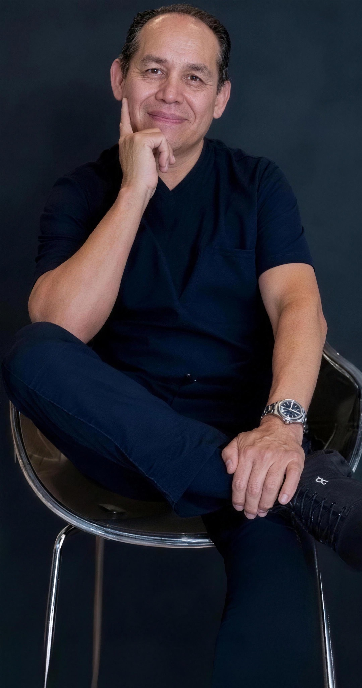
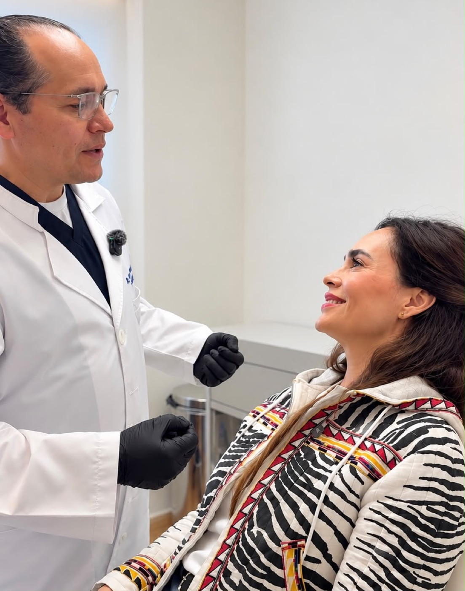

OÍDO
Oído
Escucha bien, vive mejor
- Infecciones de oído
- Aparatos auditivos
- Perforación de membrana timpánica
- Parálisis facial
- Cirugías de oído
- Zumbido de oídos y vértigo
ORL Médico especialista en oídos, nariz y garganta en San Luis Potosí
Rinoplastia funcional y estética y cirugía de cabeza y cuello. 26 años de práctica privada y certificación vigente del Consejo Mexicano de Otorrinolaringología.
Más de 390 opiniones de pacientesVerificadas en Doctoralia. Léelas aquí
Otorrinolaringólogo y cirujano de cabeza y cuello. Potosino, formado en la UNAM, con una práctica dedicada a que respires, escuches y luzcas mejor.
Cada año participa en cursos, congresos y talleres nacionales e internacionales para mantener al día sus técnicas y su certificación.
La cirugía de nariz debe cuidar la función junto con la apariencia. Si solo hace falta respirar mejor, es una cirugía funcional; si buscas un cambio estético, se evalúan las proporciones adecuadas para tu rostro, sin comprometer nunca la respiración.
Es un procedimiento científico y artístico: requiere empatía, formación médica y un alto sentido estético de las proporciones.
Tu nariz no solo se ve: también respira, filtra y humedece el aire que llega a tus pulmones. Como especialista en oído, nariz y garganta, el doctor conoce a fondo su anatomía interna y tu historial médico. Por eso cada rinoplastia, ya sea estética o funcional, se planea para que tu nariz se vea bien y funcione bien.
Diagnóstico apoyado en tecnología y tratamiento médico o quirúrgico para enfermedades del oído, la nariz, la laringe y la garganta, además de armonización facial.
Escucha bien, vive mejor
Respira mejor, vive mejor
Tu voz también importa
Resalta lo mejor de ti
¿No ves tu caso? Cuéntanos qué te pasa y te orientamos.
Escribir por WhatsAppDesliza para comparar. Todos los casos se publican con autorización firmada del paciente y con las mismas condiciones de fotografía.
Fotografías reales de pacientes, publicadas con su autorización y sin retoque. Los resultados varían en cada paciente.
Normalmente hay de 2 a 3 semanas de espera, según la agenda. Reserva en Doctoralia o por WhatsApp.
Revisión por fuera y por dentro con endoscopia, fotografías de perfil y simulación de los cambios en tiempo real.
En quirófano de hospital, con anestesia general. Dura en promedio 2 horas y no se usan taponamientos nasales.
Instrucciones de cuidado por escrito y revisiones a los 8 días, 15 días y un mes.
Lo más importante es entender por qué quieres operarte y qué esperas lograr. También revisamos tus antecedentes: obstrucción nasal, cirugías previas y medicamentos. Algunas condiciones, como los trastornos de coagulación, pueden hacer que la cirugía no sea recomendable.
Exploramos tus rasgos faciales y tu nariz por fuera y por dentro, y solicitamos estudios de laboratorio. El grosor de tu piel o la firmeza del cartílago influyen en el resultado y en cómo respirarás después.
Tomamos fotografías de tu nariz desde varios ángulos. Con ellas simulamos posibles resultados, planeamos la cirugía y comparamos tu evolución a largo plazo.
Te explicamos con honestidad qué puede lograr la rinoplastia en tu caso y qué no. Es normal sentir pena al hablar de tu apariencia: contarnos tus deseos con confianza es clave para un buen resultado.
Espacio para el testimonio de un paciente, con su autorización.
Nombre o iniciales · Rinoplastia
Espacio para el testimonio de un paciente, con su autorización.
Nombre o iniciales · Septoplastia



¿No encuentras tu pregunta? Escríbenos por WhatsApp y te respondemos en horario de consulta.
Horario de consulta
Facilidades
Con las técnicas actuales el dolor es mínimo. Muchos pacientes comentan que no les dolió y que fue más incómoda la colocación de la vía intravenosa en el brazo.
Depende de cada caso. En algunas ocasiones el paciente pasa una noche en el hospital en vigilancia y cuidados. Te lo indicamos desde la valoración.
En promedio 2 horas, en quirófano de hospital y bajo anestesia general.
No. Respiras por la nariz de inmediato: no se colocan taponamientos nasales, solo férulas y vendajes externos.
Por lo general, dos semanas.
A los dos meses de la cirugía.
No es lo más común. Existe un pequeño riesgo de queloide en la cicatriz, pero se reduce con medicamentos preventivos durante la cirugía y el postoperatorio.
Sí. La rinoplastia se planea para cuidar la función respiratoria junto con la apariencia; la valoración con endoscopia define qué necesita tu nariz por dentro y por fuera.
Revisiones a los 8 días, 15 días y un mes, además de instrucciones de cuidado por escrito.
Sí. Ofrecemos consulta en línea para pacientes foráneos o del extranjero, y también consultas en inglés.
Normalmente de 2 a 3 semanas, según la disponibilidad de la agenda.
Av. de los Pintores 235, Col. Burócratas del Estado, C.P. 78213, San Luis Potosí, S.L.P.
Lunes a viernes: 10:00 a 14:00 y 16:30 a 19:30 h
Sábado: 10:00 a 14:00 h